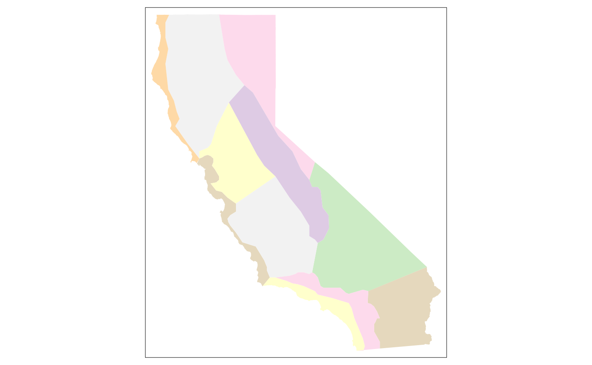

Before you can fetch data of any kind from Cal-Adapt, you have to construct an API request object. Creating an API request object is like filling out an order form. Once completed, you feed the API request to a function that actually retrieves data (either tabular or raster).
An API request object contains all the information needed to fetch data, including the location(s) of interest, dataset(s), and time period. In practice, you construct an API request object by stringing together a series of functions that specify the different pieces of the request. Examples:
library(caladaptr)
#> caladaptr (version 0.6.1)
#> URL: https://ucanr-igis.github.io/caladaptr
#> Bug reports: https://github.com/ucanr-igis/caladaptr/issues
## Request modeled climate data (from Scripps)
sac_minmaxtemp_cap <- ca_loc_pt(coords = c(-121.4687, 38.5938)) %>% ## pointlocation(s)
ca_gcm(c("HadGEM2-ES", "CNRM-CM5", "CanESM2","MIROC5")) %>% ## GCM(s)
ca_scenario(c("rcp45","rcp85")) %>% ## emission scenarios(s)
ca_cvar(c("tasmin", "tasmax")) %>% ## climate variables
ca_period("year") %>% ## temporal aggregation period
ca_years(start = 1971, end = 2070) ## start and end dates
## Specify Livneh data (observed historical) for a HUC10 watershed
huc_pr_cap <- ca_loc_aoipreset(type = "hydrounits", ## Preset AOI
idfld = "huc10",
idval = "1809020409") %>%
ca_livneh(TRUE) %>% ## Livneh data
ca_cvar("pr") %>% ## precipitation
ca_period("day") %>% ## daily
ca_dates(start = "1960-10-01", end = "2010-09-30") %>% ## start and end dates
ca_options(spatial_ag = "mean") ## spatially aggregate w/ mean
## Specify desired data by slug for irrigated water management districts
irwm_ht_cap <- ca_loc_aoipreset(type = "irwm", idfld = "name") %>% ## Preset AOI
ca_slug(c("exheat_year_ens32avg_historical", ## slug(s)
"exheat_year_ens32avg_rcp45",
"exheat_year_ens32avg_rcp85")) %>%
ca_options(spatial_ag = "max") ## spatially aggregate w/ maxAll API requests must specify the location(s) of interest. Locations can be specified by points, preset areas-of-interest, or user-provided geoms. All of these options allow you to specify a primary key field which will be included in the results so the results can be joined to the input features.
1) Points
Point locations can be included using ca_loc_pt() if the points are saved in a vector, matrix or data frame, and ca_loc_sf() if the points are in a simple feature data frame.
If points are passed in a matrix, vector or data frame, the first column should be longitude (x), and the second column should be latitude (y). Geographic coordinates are not required if the points are in a sf data frame (but its a good idea). Example:
(ca_loc_pt(coords = c(-122.1, 38.1)))
#> Cal-Adapt API Request
#> Location(s):
#> x: -122.1
#> y: 38.1
#> 2) Preset areas-of-interest
The Cal-Adapt API is integrated with a number of preset polygon areas-of-interest, also referred to as boundary layers. These are things like county boundaries, census tracts, watersheds, etc. If your study area(s) coincide with one of these layers, you can specify them by name using ca_loc_aoipreset().
To see a list of the available preset layers, run:
aoipreset_types
#> [1] "censustracts" "counties" "cdistricts"
#> [4] "ccc4aregions" "climregions" "hydrounits"
#> [7] "irwm" "electricutilities" "wecc-load-area"
#> [10] "evtlocations" "place"When you use a preset AOI layer in an API request, you can specify which feature(s) you’re interested in (if you don’t want them all). For example if you want data summarized by county, you can specify which of the over 50 counties in California you’re interested in. Two arguments must be passed to specify features of interest: i) idfld (a field in the attribute table that has unique values), and ii) idval (the id numbers or values of the features). Example:
(ca_loc_aoipreset(type = "counties", idfld = "fips", idval = "06013"))
#> Cal-Adapt API Request
#> Location(s):
#> AOI Preset: counties
#> fips(s): 06013
#> To figure out which fields are available to specify locations for a given preset layer, you can use the built-in constant aoipreset_idflds. For example if you’re interested in counties, you can use the following fields:
aoipreset_idflds$counties
#> [1] "fips" "id"To see the valid values to specify features, use the built-in constant aoipreset_idval. For example, the ‘Counties’ preset layer has a column named ‘fips’ you can use to specify which county(s) you’re interested in. The values look like:
aoipreset_idval$counties$fips %>% head()
#> [1] "06001" "06003" "06005" "06007" "06009" "32510"All the preset areas of interest can be imported as sf objects using ca_aoipreset_geom(). For example the climate regions for the 5th climate change assessment look like:
ca_climregions_sf <- ca_aoipreset_geom("climregions")
#> Reading layer `climregions' from data source
#> `C:\Users\Andy\AppData\Local\R\cache\R\caladaptr\climregions.gpkg'
#> using driver `GPKG'
#> Simple feature collection with 11 features and 2 fields
#> Geometry type: MULTIPOLYGON
#> Dimension: XY
#> Bounding box: xmin: -13848750 ymin: 3833695 xmax: -12705800 ymax: 5163721
#> Projected CRS: WGS 84 / Pseudo-Mercator
library(tmap)
tm_shape(ca_climregions_sf) + tm_fill(col = "MAP_COLORS", palette = "Pastel1")
3) User-provided sf features
If Cal-Adapt’s preset areas-of-interest don’t align with your study area(s), you can provide your own locations as a simple feature data frame. Your sf object should have a column with unique values (like OBJECTID) to join the input features to the Cal-Adapt data.
Add locations from a sf object to an API request with ca_loc_sf(). POINT, POLYGON, and MULTIPOLYGON geometries are supported. Lines are not supported, and multipoint features must be converted to simple point features (see st_cast). The idfld argument specifies a column in the sf object that contains unique values. If the sf object lacks a column with unique values, you can add one using mutate(), or provide a vector of unique id values with idval.
The Cal-Adapt API has limits as to how large a spatial area can be queried. If your area-of-interest is larger than a county, consider blocking the area with ca_biggeom_blocks(). If your locations include multiple points per 6km LOCA grid cell (Cal-Adapt’s smallest spatial unit), you can group them and just make one call per grid cell (see the Large Queries vignette for sample code).
In the next example, we get a sf data frame of the Congressional Districts, and use it to start an API request object.
## Get Congressional Districts as a sf object
(cdistricts_sf <- ca_aoipreset_geom("cdistricts", quiet = TRUE))
#> Simple feature collection with 66 features and 9 fields
#> Geometry type: MULTIPOLYGON
#> Dimension: XY
#> Bounding box: xmin: -13866650 ymin: 3675964 xmax: -12138860 ymax: 6275056
#> Projected CRS: WGS 84 / Pseudo-Mercator
#> First 10 features:
#> statefp cd114fp affgeoid geoid lsad cdsessn aland awater id
#> 1 06 11 5001400US0611 0611 C2 114 1278249894 92424585 1
#> 2 06 41 5001400US0641 0641 C2 114 819873792 4240410 2
#> 3 16 02 5001400US1602 1602 C2 114 111948989280 1081502469 3
#> 4 06 50 5001400US0650 0650 C2 114 7219205047 43666727 4
#> 5 06 16 5001400US0616 0616 C2 114 7354278768 118616551 5
#> 6 49 02 5001400US4902 4902 C2 114 103638076153 2945583941 6
#> 7 06 49 5001400US0649 0649 C2 114 1432623041 512378639 7
#> 8 06 08 5001400US0608 0608 C2 114 85126210480 450307265 8
#> 9 06 20 5001400US0620 0620 C2 114 12624185548 1574913163 9
#> 10 06 32 5001400US0632 0632 C2 114 321774529 5320498 10
#> geom
#> 1 MULTIPOLYGON (((-13628819 4...
#> 2 MULTIPOLYGON (((-13086531 4...
#> 3 MULTIPOLYGON (((-12950296 5...
#> 4 MULTIPOLYGON (((-13053482 3...
#> 5 MULTIPOLYGON (((-13497338 4...
#> 6 MULTIPOLYGON (((-12696318 4...
#> 7 MULTIPOLYGON (((-13105979 3...
#> 8 MULTIPOLYGON (((-13319259 4...
#> 9 MULTIPOLYGON (((-13589114 4...
#> 10 MULTIPOLYGON (((-13143818 4...
## Start an API request object
(ca_loc_sf(loc = cdistricts_sf, idfld = "geoid"))
#> Cal-Adapt API Request
#> Location(s):
#> Simple Feature MULTIPOLYGON (66 feature(s))
#> ID field: geoid
#> A Cal-Adapt API request must also specify the data layers(s) to retrieve. A description of the datasets on Cal-Adapt is beyond the scope of this vignette, but some general guidelines include:
Review the data documentation on Cal-Adapt, including the Introduction to Climate Data webinar.
A local copy of Cal-Adapt data catalog can be retrieved from ca_catalog_rs(), which returns a tibble. One way to find a dataset for your project is to view the catalog in a RStudio viewer pane and use the filter tool to find specific datasets.
View(ca_catalog_rs())ca_catalog_search(), passing it keywords or a slug. Partial matches are returned as well.
ca_catalog_search("pr_day_gridmet")
#>
#> pr_day_gridmet
#> name: gridMET daily precipitation historical
#> url: https://api.cal-adapt.org/api/series/pr_day_gridmet/
#> tres: daily
#> begin: 1979-01-01T00:00:00Z
#> end: 2020-12-31T00:00:00Z
#> units: mm
#> num_rast: 1
#> id: 366
#> xmin: -124.579167
#> xmax: -113.370833
#> ymin: 31.545833
#> ymax: 43.754167Once you’ve identified which dataset you need, add functions to the Cal-Adapt API request. The groups of functions you use to specify datasets fall in three categories: 1) one of the main climate models, 2) observed climate data, and 3) slugs.
Modeled Climate Data
Many of Cal-Adapt’s datasets are based on the direct output of global climate models (e.g., temperature, precipitation) or their derivatives (e.g., snow water equivalent, evaoptranspiration). These models have been used to predict both future and historic conditions based on specific emissions scenarios. API requests for modeled climate data should include:
To help you construct an API request for modeled climate data, the following built-in constants provide valid values. Note that not all combinations have an existing dataset.
cvars
#> [1] "tasmax" "tasmin" "pr" "swe" "baseflow"
#> [6] "ET" "rainfall" "runoff" "snowfall" "soilMoist1"
#> [11] "Tair"
gcms
#> [1] "HadGEM2-ES" "CNRM-CM5" "CanESM2" "MIROC5" "ACCESS1-0"
#> [6] "CCSM4" "CESM1-BGC" "CMCC-CMS" "GFDL-CM3" "HadGEM2-CC"
#> [11] "ens32avg" "ens32max" "ens32min"
scenarios
#> [1] "rcp45" "rcp85" "historical"
periods
#> [1] "day" "month" "year" "30yavg"Example:
(ca_cvar(cvar = "tasmin") %>%
ca_gcm(gcm = gcms[1:4]) %>%
ca_scenario("rcp85") %>%
ca_period("year"))
#> Cal-Adapt API Request
#> Location(s): NA
#> Variable(s): tasmin
#> Temporal aggregration period(s): year
#> GCM(s): HadGEM2-ES, CNRM-CM5, CanESM2, MIROC5
#> Scenario(s): rcp85
#> Observed Data
Livneh data are based on historic records that have been spatially interpolated. To specify a Livneh dataset, include ca_livneh() in the request and omit GCMs and emission scenarios:
(ex2_cap <- ca_cvar(cvar = "pr") %>%
ca_livneh(TRUE) %>%
ca_period("year"))
#> Cal-Adapt API Request
#> Location(s): NA
#> Variable(s): pr
#> Temporal aggregration period(s): year
#> Livneh data: TRUE
#> Slugs
Each of the nearly 950 raster series available through the Cal-Adapt API has a unique slug, or short name. You can look up slugs in the Cal-Adapt catalog (ca_catalog_rs()).
If the dataset you’re interested in can’t be specified using the functions above, you can use ca_slug() to specify it by its slug. With ca_slug(), you don’t have to include the climate variable, period, GCM, or scenario - those are all implied by the slug. But you’ll still need to specify a location and optionally dates for the API request to be complete.
(ca_slug(slug = "exheat_year_ens32avg_historical"))
#> Cal-Adapt API Request
#> Location(s): NA
#> Slug(s): exheat_year_ens32avg_historical
#> Date ranges are optional in API requests. If a date range is not provided, data for the entire time range of the dataset will be returned. You can include a date range with ca_dates() or ca_years(). Enter years as integers, and dates as character values "yyyy-mm-dd". Examples:
ca_options() is how you specify any other options for the request. Currently the only option in use is spatial_ag. spatial_ag is the spatial aggregation function that should be used when querying polygon areas. If a feature intersects more than one LOCA grid cell, this function will be used to collapse the grid cells into one value.
(ca_options(spatial_ag = "mean"))
#> Cal-Adapt API Request
#> Location(s): NA
#> Options:
#> spatial ag: mean
#> Before you use an API request to fetch data, there are a couple of things you can do to check its validity.
To verify the API request covers the correct location, you can plot it. Below we plot a sample API request returned by ca_example_apireq(). Adding locagrid = TRUE overlay the actual LOCA grid cells.
(samp_cap <- ca_example_apireq(3))
#> Cal-Adapt API Request
#> Location(s):
#> Simple Feature POLYGON (1 feature(s))
#> ID field: id
#> Variable(s): pr
#> Temporal aggregration period(s): day
#> GCM(s): CCSM4
#> Scenario(s): rcp85
#> Dates: 2010-01-01 to 2012-12-31
#> Options:
#> spatial ag: mean
#>
plot(samp_cap, locagrid = TRUE)ca_preflight() does a more complete check of an API request, double-checking that it refers to an existing dataset, data are available for the requested date range, the request doesn’t have conflicting elements, it isn’t too big, etc. Some warnings are specific to fetching values vs fetching rasters, and are reported accordingly:
ca_example_apireq(4) %>% ca_preflight()
#> General issues
#> - none found
#> Issues for querying values
#> - none found
#> Issues for downloading rasters
#> - none found